Application Layer
约 4504 个字 17 张图片 预计阅读时间 30 分钟
应用层中会有大量的协议，需要记住协议的作用以及协议在客户端和服务端使用的端口
应用层概述
应用进程通信方式
- 客户/服务器（C/S, Client/Server）方式
- 浏览器/服务器（B/S，Browser/Server） 方式
- 对等（P2P，Peer to Peer）方式
C/S
C/S方式可以是面向连接的，也可以是无连接的。面向连接时，C/S通信关系一旦建立，通信就是双向的，双方地位平等，都可发送和接收数据。
客户机主动发起请求，需要知道服务器所在主机的IP地址，服务器被动等待请求。并且服务器上可以运行多种服务，需要一直运行着。
B/S
B/S方式可以看做C/S方式的特例，即客户软件改为浏览器，通常采取3层架构实现。
特点
- 界面统一，使用简单。客户端只需要安装浏览器软件
- 易于维护。对应用系统升级时，只需更新服务器端的软件，减轻了系统维护和升级的成本
- 可扩展性好。采用标准的TCP/IP和HTTP协议，具有良好的扩展性
- 信息共享度高。HTML是数据格式的一个开放标准，目前大多数流行的软件均支持HTML
- 需要注意的是，在一种浏览器环境下开发的界面在另一种浏览器环境下可能有不完全适配的情况，这时需要安装对应的浏览器
P2P
对等方式是指两个进程在通信时并不区分服务的请求方和服务的提供方。P2P方式从本质上看仍然是使用了C/S方式，但强调的是通信过程中的对等，这时每一个P2P进程既是客户同时也是服务器
服务器进程工作方式
- 循环方式：一次只运行一个服务进程，当有多个客户进程请求服务时，服务进程就按请求的先后顺序依次做出响应(阻塞方式)
- 使用无连接的UDP服务进程通常都工作在循环方式，即一个服务进程在同一时间只能向一个客户进程提供服务。(顺序服务)
- 并发方式：可以同时运行多个服务进程，每一个服务进程都对某个特定的客户进程做出响应(非阻塞方式)
- 面向连接的TCP服务进程通常都工作在并发服务方式，服务进程在同一时间可同时向多个客户进程提供服务。(并发服务)
域名系统
概述
域名系统(DNS)是互联网重要的基础设施之一，向所有需要域名解析的应用提供服务，主要负责将可读性好的域名映射成IP地址。
域名系统名字空间和层次结构
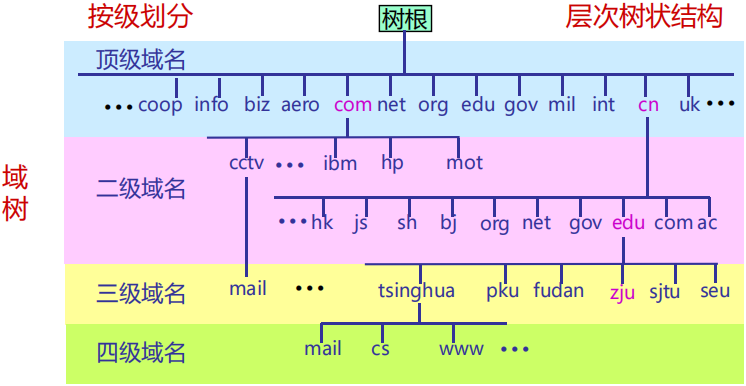
一个域名可以同时是一级域名和二级域名
- 域名的结构由若干个分量组成，各分量之间用小数点(.)隔开，总长不超过255个字符
- 各分量分别代表不同级别的域名。(≤63字符)
顶级域名
顶级域名TLD(Top Level Domain)一般有三类
- 国家或地区顶级域nTLD，也记为ccTLD (.cn 中国)
- 基础设施域.arpa (Address and Routing Parameter Area)，专用于Internet基础设施目的
- 通用顶级域gTLD (.com .edu .gov ...)
国家顶级域名 .cn下的二级域名分为三类
- 类别域名7个(.edu.cn, .gov.cn, .org.cn, .net.cn, .com.cn, .ac.cn, .mil.cn)
- 行政区域名34个：省、直辖市、自治区、特区等行政区域名
- 无类别域名：例如 www.google.cn、www.tianya.cn等
域名管理
- 域名管理机构分级负责域名注册，低一级域名由高一级域名的下属机构管理
- .edu.cn下三级域名注册由CERNET负责
- 我国的其它二级域名注册由中国互联网络信息中心(CNNIC)负责
域名服务器
- 保存关于域树(domain tree)的结构和设置信息的服务器程序称为名字服务器(name server)或域名服务器，负责域名解析工作
- 每个名字服务器具有连向其它有关域名服务器的信息
- 域名与IP地址可以是一对一、一对多或者多对一的关系
- 域名解析过程对用户透明
域名系统的区域
- Internet上域名服务器系统也按域名层次树状安排。每个域名服务器管辖一部分域
- 一个域名服务器所负责或管辖（有权限的）范围称为管辖区(zone)，简称为区
- 域名服务器的管辖范围以“区”为单位，而不是以“域”为单位
- 管辖区是域名“域”的子集。管辖区可以小于或等于域，但不可能大于域
名字服务器类别
- 权威名字服务器(authoritative name server)：知道一个区的所有内容，每个DNS区至少应有一个IPv4可访问的权威名字服务器提供服务
- 根名字服务器(root name server) /根服务器(root server)
- 每个根服务器都知道所有的顶级域名服务器的域名及其IP地址
- 路由器把查询转发到距离递归服务器最近的一个根服务器(采用了任意播技术)，提高了查询效率
- 根服务器并不直接把主机用户所查的域名转换成IP地址
- 根服务器共有13套，这些根服务器相应的域名分别是： a.rootservers.net － m.rootservers.net
- 更改根服务器数据只在a.rootservers.net上进行，然后同步到另外12套中，这样既能保证数据一致性，也提高了域名服务可靠性
- 顶级域名字服务器(TLD name server)
- 顶级域(TLD)名字服务器负责管理在该顶级域名服务器注册的所有二级域名
- 二级域名字服务器(second level domain name server)
- 每一个主机都必须在某个二级域名字服务器处注册登记。因此二级域名字服务器知道其管辖的主机名应当转换成什么IP地址
- 三级域名字服务器(third level domain name server)，三级域及以下的名字服务器(例如zju.edu.cn)通常在用户本地区域，因此三级域及以下的名字服务器也统称为本地域名服务器
- 根名字服务器(root name server) /根服务器(root server)
- 递归解析器(recursive resolver)/递归服务器
- 每一个Internet服务提供者ISP(Internet Service Provider), 都至少有一个递归服务器，距离用户主机较近
- 当用户主机发出DNS查询报文时，这个查询报文就首先被送往该主机所在区域的递归服务器
域名解析过程
- 当某一应用进程需要进行域名解析时，该应用进程将域名放在DNS请求报文（UDP数据报, 端口号为53）发给递归服务器（使用UDP是为了减少开销）。递归服务器得到查询结果后, 将对应IP地址放在应答报文中返回给应用进程
- 域名查询有递归查询(recursive query)和迭代查询(或循环查询，iterative query)两种方式
- 主机向递归解析器/本地域名字服务器的查询一般采用递归查询
- 递归解析器/本地域名字服务器向根服务器可以采用递归查询，但一般优先采用迭代查询
递归查询
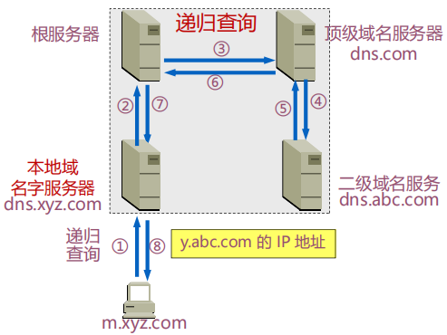
迭代查询
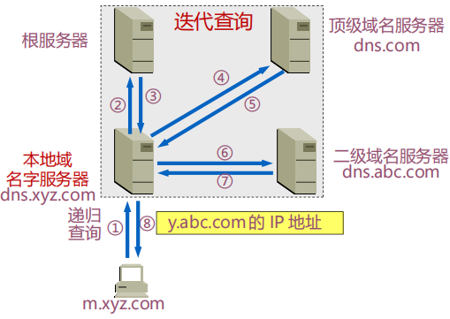
域名系统查询和响应
常用资源类型
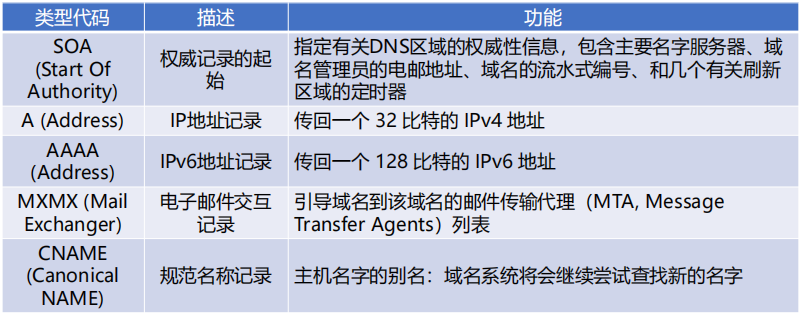
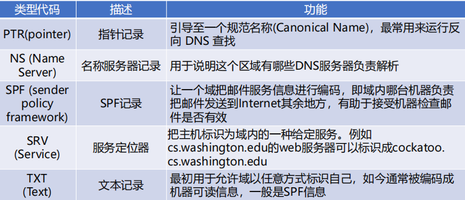
DNS报文格式
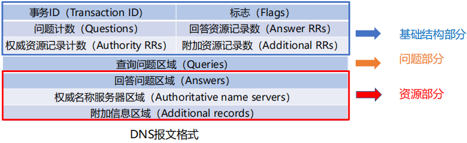
报文字段解释
- 事务ID：DNS报文的ID标识。对于请求报文和其对应的响应报文，该字段的值是相同的。通过它可以区分 DNS 应答报文是对哪个请求进行响应的
- 标志：DNS报文中的标志字段，具体结构下页说明
- 问题计数：DNS查询请求的数目
- 回答资源记录数：DNS响应的数目
- 权威资源记录数：权威资源记录的数目
- 附加资源记录数：额外的记录数目（权威名字服务器对应IP地址的数目）
DNS报文格式的标志(Flags)字段
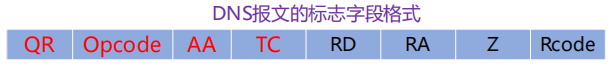
- QR（Query/Response）：查询请求/响应的标志信息。查询请求时值为0；响应时值为1
- Opcode：操作码。其中，0表示标准查询；1表示反向查询；2表示服务器状态请求
- AA（Authoritative）：授权应答，该字段在响应报文中有效。值为1时表示名称服务器是权威服务器；值为0时表示不是权威服务器
- TC（Truncated）：表示是否被截断。值为1时，表示响应已超过512字节并已被截断，只返回前512个字节
- RD（Recursion Desired）：期望递归。该字段能在一个查询中设置，并在响应中返回。该标志告诉域名服务器必须处理这个查询，这种方式被称为一个递归查询。如果该位为0，且被请求的域名服务器没有一个授权回答，它将返回一个能解答该查询的其他域名服务器列表。这种方式被称为迭代查询
- RA（Recursion Available）：可用递归。该字段只出现在响应报文中。当值为1时，表示服务器支持递归查询
- Z：保留字段，在所有的请求和响应报文中，它的值必须为0
- Rcode（Reply code）：返回码字段，表示响应的差错状态。常用Rcode有
- 当值为0(NoError)时，表示没有错误
- 当值为1(FormErr)时，表示报文格式错误，服务器不能理解请求的报文
- 当值为2(ServFail)时，表示域名服务器失败，因为服务器的原因导致没办法处理这个请求
- 当值为3(NXDomain)时，表示域名不存在，只有对授权域名解析服务器有意义，指出解析的域名不存在
- 当值为4(NotImp)时，表示查询类型不支持，即域名服务器不支持查询类型
- 当值为5(Refused)时，表示拒绝应答，一般是服务器由于设置的策略拒绝给出应答，如服务器不希望对某些请求者给出应答
DNS报文格式的问题部分
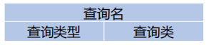
- 用来显示DNS查询请求的问题，通常只有一个问题
- 包含正在进行的查询信息，包含查询名（被查询主机名字）、查询类型、查询类
- 查询名(name)：一般为要查询的域名，有时是IP地址，用于反向查询
- 查询类型(type)：DNS查询请求的资源类型。通常查询类型为A类型，表示由域名获取对应的IP地址
- 查询类(class)：地址类型，通常为互联网地址，值为1(IN)
DNS报文格式的资源记录(RR, Resource Record)部分
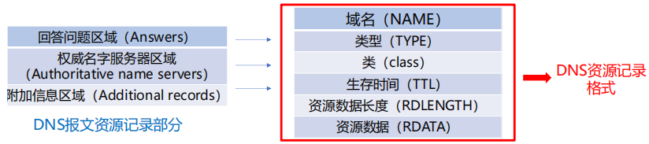
资源记录部分是DNS报文格式的最后3个字段，只有在DNS响应报文中才出现 ，包括 回答问题区域字段、权威名字服务器区域字段、附加信息区域字段。这3个字段都采用资源记录的格式
- 域名：DNS请求的域名
- 类型：资源记录的类型，与问题部分中的查询类型值相同
- 类：地址类型，与问题部分中的查询类值相同
- 生存时间：以秒为单位，表示资源记录的生命周期，一般用于当地址解析程序取出资源记录后决定保存及使用缓存数据的时间。它同时也可以表明该资源记录的稳定程度，稳定的信息会被分配一个很大的值
- 资源数据长度：资源数据的长度
- 资源数据：表示按查询段要求返回的相关资源记录的数据
DNSSEC
DNSSEC依靠数字签名保证DNS应答报文的真实性和完整性，包括通过身份验证拒绝DNS数据存在的机制
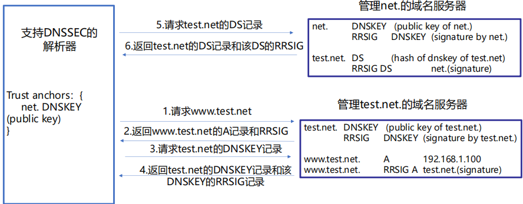
域名系统高速缓存
为提高DNS查询效率，并减轻根域名服务器的负荷和减少Internet上的DNS查询报文数量，域名服务器广泛使用高速缓存，用来存放最近查询过的域名以及从何处获得域名映射信息的记录
好处
- 减小网络中的流量
- 减轻根域名服务器的负荷
域名系统隐私
DNS敏感数据主要的泄露途径
- 通信链路窃听：由于DNS的开放性，窃听者可以像窃听其他流量一样监听DNS流量。同时DNS查询并不经过任何的加密手段，因此，任何第三方的机构或个人很容易通过在用户和服务器之间进行搭线窃听，查看到用户所有的DNS查询信息
- 服务器收集：全球现有超过1000万台域名服务器，每天产生的域名查询信息已经达到了万亿级别，同时由于DNS日志已被广泛应用于各种DNS解析器软件中，因此用户的每条查询信息都可以被服务器记录下来
电子邮件
体系结构和服务
电子邮件系统体系结构
- 用户代理（user agent）——邮件客户端
- 传输代理（message transfer agent）——邮件服务器
- 简单邮件传输协议SMTP（Simple Mail Transfer Protocol）——邮件服务器之间传递邮件使用的协议
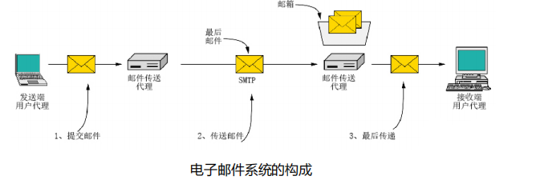
用户代理
用户代理是一个程序，用户通过它和电子邮件系统交互
功能
- 显示入境邮件信息
- 邮件处置：删除邮件、转发邮件、保存邮件、过滤/搜索邮件
- 自动处理邮件：邮件过滤、自动回复、自动转发
- 发送邮件
- 邮件列表：允许用户通过一个命令把相同的邮件发送给群发列表中的每个人。可由用户代理在本地维护或远程维护一个在邮件传输代理上的群发名单
- 其它功能：在邮件底部追加签名块（signature block）、更正拼写错误和计算表名该邮件是否有效的数字签名
邮件传送
邮件传输采用的协议是SMTP：SMTP利用TCP可靠地从客户向服务器传递邮件，使用端口25。SMTP有3个阶段(连接建立、邮件传送、连接关闭)。
SMTP是一个简单的ASCII协议，邮件必须为7位ASCII
SMTP的不足
- 不包括认证
- 传输ASCII而不是二进制数据
- 邮件以明文形式出现
邮件格式
包括首部header(必须含有一个From:首部行和一个To:首部行，还可以包含Subject: 等其他可选的首部行)和消息体(邮件正文)
最后传递
最终交付（邮件访问）协议: 从邮件服务器的邮箱中获取邮件
- POP3：Post Office Protocol-Version 3，第三版邮局协议
- IMAP：Internet Message Access Protocol，Internet邮件访问协议
- Webmail（HTTP）：基于Web的电子邮件
为什么不能使用SMTP获取邮件？
接收方的用户代理不能使用 SMTP 从传输代理获取邮件，因为取邮件是一个拉操作，而 SMTP 是一个推协议，通过引入最终交付（邮件访问）协议来解决这个问题。
POP3协议
- 当用户代理打开一个到端口110上的TCP连接后，客户/服务器开始工作
- POP3的三个阶段：
- 认证(Authorization)：处理用户登录的过程
- 事务处理(Trnsactions)：用户收取电子邮件，并将邮件标记为删除
- 更新(Update)：将标为删除的电子邮件删除
IMAP
- IMAP是较早使用的最终交付协议—POP3(邮局协议，版本3)的改进版
- 邮件服务器运行侦听端口143的IMAP服务器
- IMAP还为用户提供了在远程文件夹中查询邮件的命令，按指定条件去查询匹配的邮件
- 与POP3不同，IMAP服务器维护了IMAP会话的用户状态信息，例如，文件夹的名字以及哪些邮件与哪些文件夹相关联
POP3 vs IMAPv4
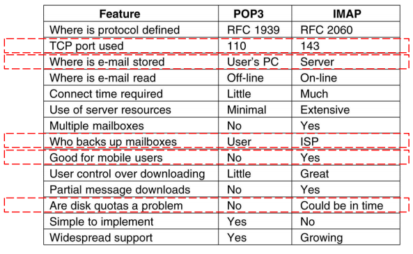
Webmail
- 使用Web作为界面，用户代理就是普通的浏览器
- 用户及其远程邮箱之间的通信通过HTTP进行
WWW
WWW体系结构概述
- 服务器
- Web页面（HTML文档）：包含到多种对象或链接
- Web对象（包括：静态对象和动态对象）：可以是 HTML文档、 图像文件、视频文件、声音文件、脚本文件等
- 对象用URL（统一资源定位符）编址：协议类型://主机名:端口//路径和文件名
- 客户端
- 发出请求、接收响应、解释HTML文档并显示
- 有些对象需要浏览器安装插件
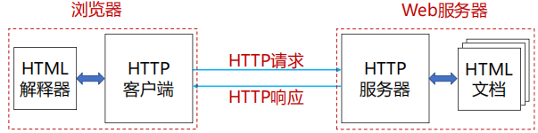
统一资源定位器URLs
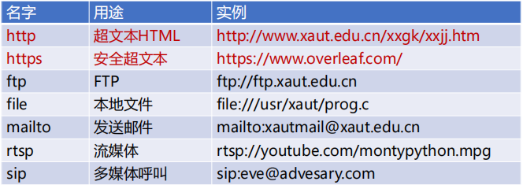
URI
URI与URL有所不同，URL告诉资源的名字以及如何找到资源，但是URI仅告诉资源的名字
静态Web(对象)
- 静态对象与静态网页
- 文本，表格，图片，图像和视频等多媒体类型的信息(实现语言：标记语言，如：HTML，XML，PHP等)
- 字体、颜色和布局等风格类型的信息(实现语言：层叠样式表CSS)
- 动态对象与动态网页
- 交互信息，比如，用户注册信息、登录信息等(实现：PHP/JSP等语言+MySQL等数据库)
- 链接：超链接（HyperLinks）
HTML和XML
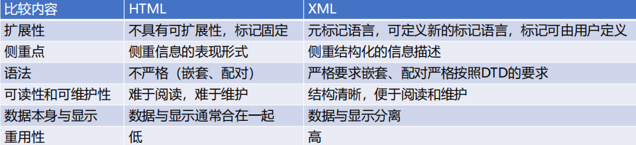